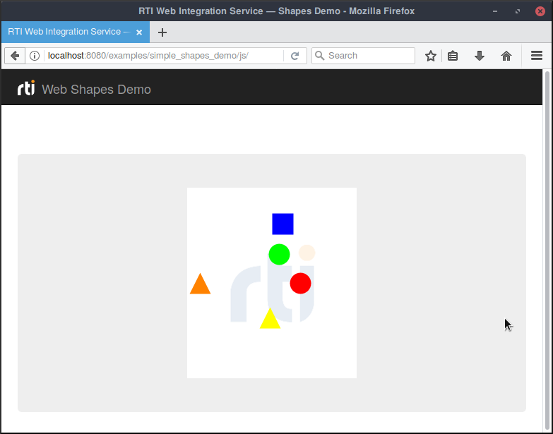
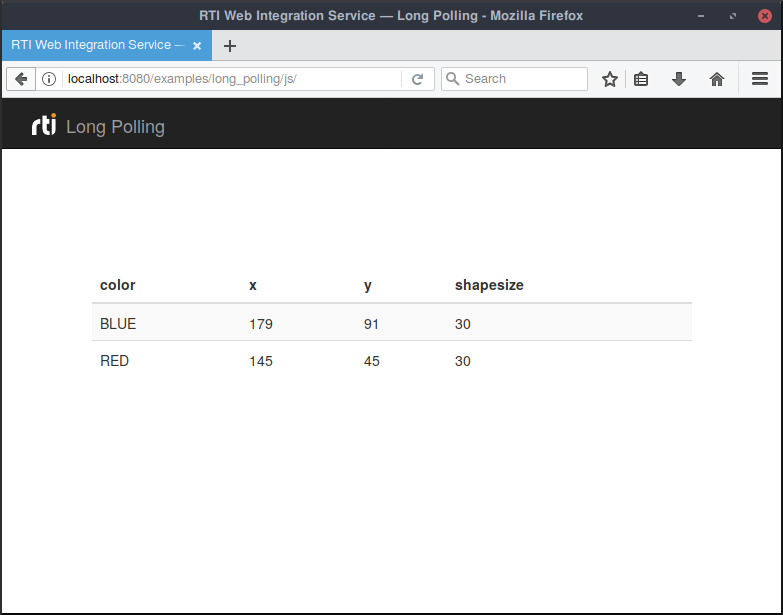
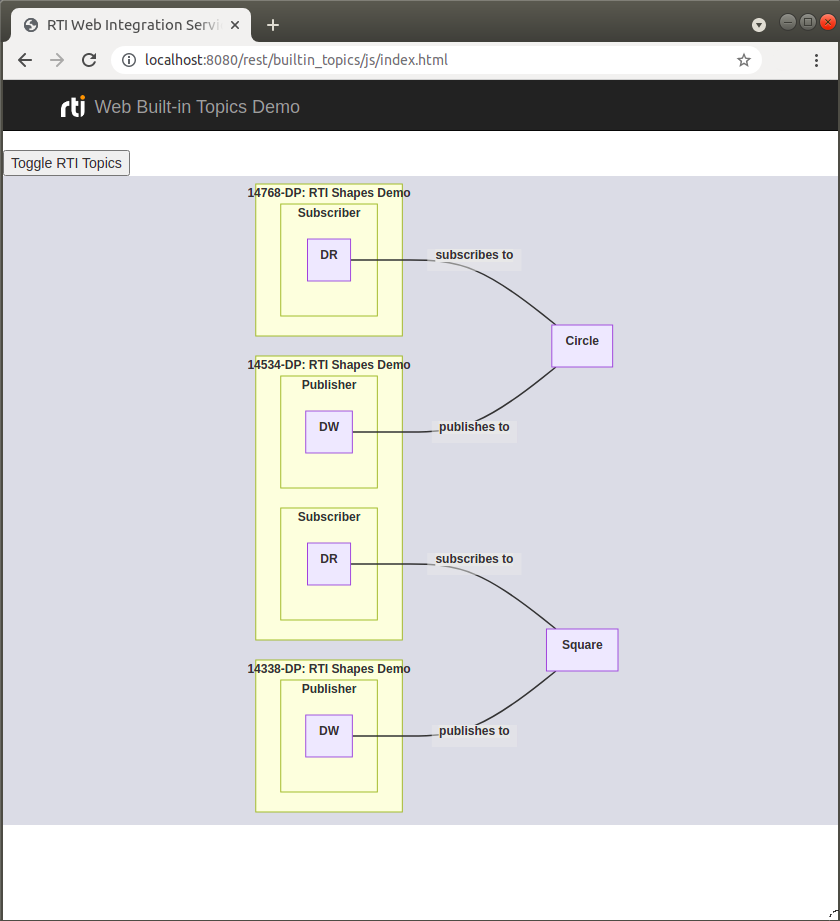

Welcome to RTI© Web Integration Service, an out-of-the-box solution for integrating web-based applications and services with RTI Connext™ DDS.
|
This example illustrates how to subscribe to Shape topics using Web Integration Service. The samples read are drawn on a Canvas using Fabric—a simple JavaScript framework. To run the web-based version of this example from RTI Launcher:
For more information on how to run this example using the command-line, check out this README file. The Simple Shapes Demo example is available in the following languages: |
 |
|
This example illustrates how to configure Web Integration Service and different client applications to subscribe to Square Topics using Long Polling. Long Polling emulates a server push mechanism over HTTP by configuring client and server applications to perform long-lasting HTTP requests that do not trigger an immediate response. To run the web-based version of this example from RTI Launcher:
For more information on how to run this example using the command-line, check out this README file. The Long Polling example is available in the following languages: |
 |
|
This example illustrates how to read discovery information using Web Integration Service. The discovered entities are presented in a hierarchical way using the library Mermaid—a simple JavaScript framework for drawing diagrams. To run the web-based version of this example from RTI Launcher:
For more information on how to run this example using the command-line, check out this README file. The Built-in Topics Demo example is available in the following languages: |
 |
|
This example illustrates how to subscribe to Shape topics using Web Integration Service's WebSocket API. The samples read are drawn on a Canvas using Fabric—a simple JavaScript framework. To run the web-based version of this example from RTI Launcher:
For more information on how to run this example using the command-line, check out this README file. The Simple Shapes Demo example is available in the following languages: |